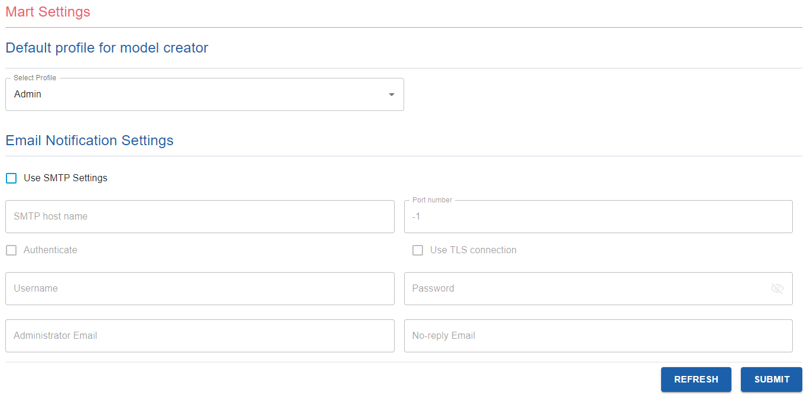

You can configure the following options in Mart per the requirements of your organization:
Typically, you configure the settings when you log in to Mart for the first time. However, you can change them whenever you want.
Follow these steps:
Go to Application Menu > Settings.
The Mart Settings page appears.

Field | Description |
Default profile for model creator | Specifies the profile that is assigned to a user on a model. This profile is assigned whenever a user creates a model and saves it to Mart for the first time. The user inherits the permissions of the default profile selected here on the model that is saved. For example, suppose that User1 is assigned with Modeler profile and the System Administrator selects Architect as the default profile for model creator. If User1 creates Model1 and saves it to Mart, for Model1, User1 inherits the permissions of Architect. Now, suppose that the System Administrator selects Viewer as the default profile for model creator, and suppose that User1 creates Model2 and saves it to Mart. For Model2, User1 inherits the permissions of Viewer. Select the No default profile option if you do not want to assign any default profile to a user. |
SMTP host name | Specifies the name of the SMTP host. Enter the name in the mail.domain.com format. Notification emails are sent from this server. |
Port number | Specifies the port number of the SMTP server. The default port number is -1. If your company is using an alternate port number for the mail server, specify that port number. |
| Authenticate | Specifies whether transactions with the SMTP server are authenticated. Select the check box to authenticate. |
| Username | Specifies the user name to authenticate the SMTP server. Select the Authenticate check box to enable authentication. |
| Password | Specifies the password to authenticate the SMTP server. Select the Authenticate check box to enable authentication. |
| Administrator email | Specifies the email ID of the Mart administrator. Notifications to Mart users are sent from this ID. |
| No-reply email from | Specifies the email ID from which administrative emails such as the password reset email are sent. This field is disabled if you select the Use TLS Connection check box. |
| Use TLS Connection | Specifies whether transactions with the SMTP server use a Transport layer Security (TLS). If you intend to use a TLS connection, ensure that the User name and Administrator email correspond to each other. Note: Select this option only if you want to use a TLS connection. Also, if you intend to use the TLS connection for a Gmail account, ensure that you do the following:
|
Mart options are configured.